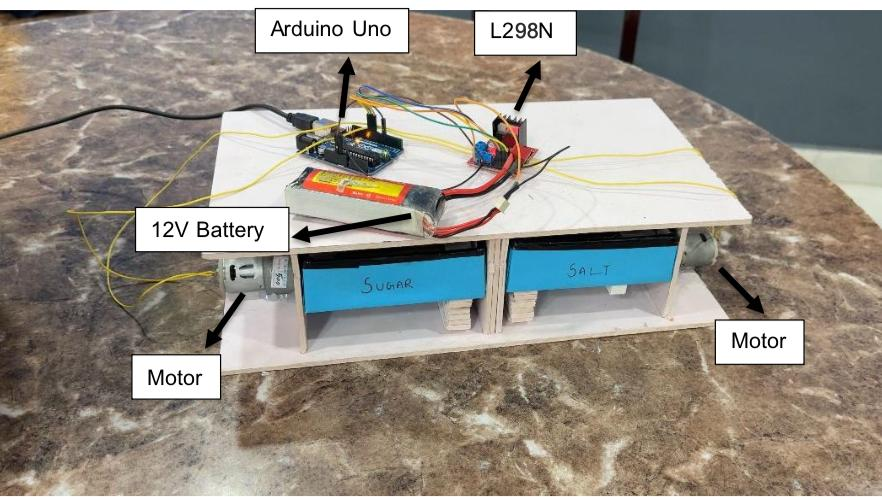
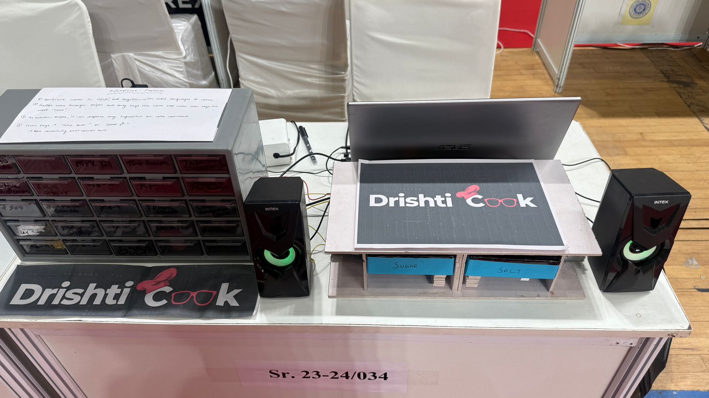
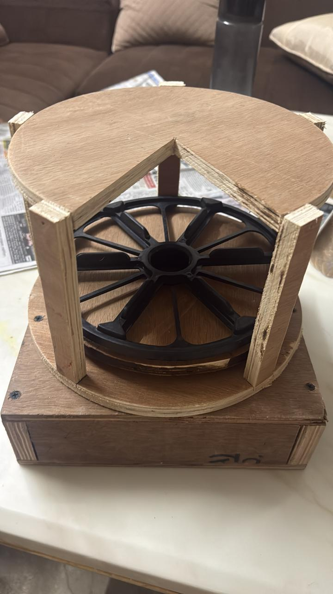
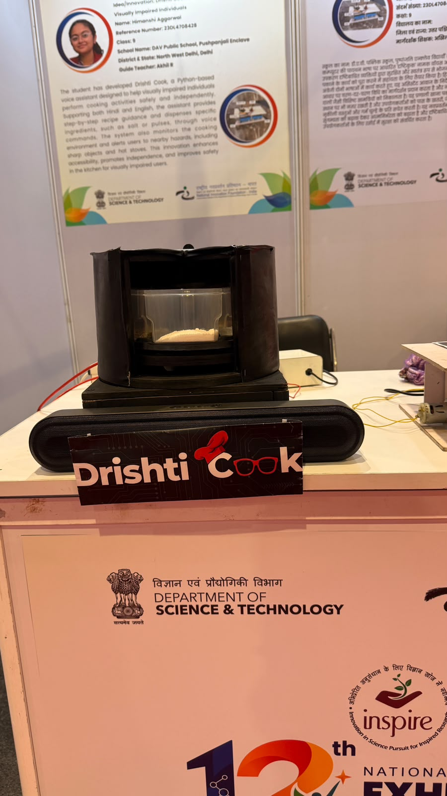

Himanshi Aggarwal
I’m a Class 12 student in Delhi, and I build assistive technology: things that make everyday tasks a little easier for people the usual tools forget about. So far that means a cooking assistant for visually impaired cooks and smart glasses that turn speech into sign language. I’m also curious about how the tools programmers use every day could help them write code that wastes less energy.
DrishtiCook
DrishtiCook is a cooking assistant for visually impaired people. You talk to it in Hindi or English, and it reads out the recipe, lets you move through the steps by voice, and dispenses ingredients when you ask for them. I’ve built two prototypes so far, and the second is quite different from the first.
Top 10 of more than 600 projects in the Sustainability Youth League. One of 5 of 119 shortlisted Delhi projects at the INSPIRE-MANAK national exhibition.
Prototype 1
The first version runs on an Arduino Uno with an L298N motor driver and two Johnson motors, powered by a 12V battery or a battery eliminator. I wrote the main program in Python and the Arduino code in C.


Prototype 2
For the second version I moved to a Raspberry Pi 5 with a microphone, a NEMA 17 stepper motor and a TMC2208 driver, because a stepper gives much finer control over where the dispenser stops. Piper reads the replies aloud. The rest is a switch, a breadboard, jumper wires and a battery eliminator, and the body is made of wood, paper and plastic boxes.


SignSync
SignSync is a pair of smart glasses that turns live speech and recorded video into sign language. The microphone on the glasses picks up what people nearby are saying, and a small pocket-sized device that goes with them shows it as sign language on its screen. It also lets the wearer ask for things without speaking: an infrared sensor on the glasses picks up long blinks, and each blink pattern sends a message such as “I need help” or “I need water.”
The glasses carry the IR sensor and the microphone. The pocket device is a Raspberry Pi with a 3.2-inch touch screen and a speaker.
Green coding research
Most code editors tell you nothing about how much energy your code uses, and I wanted to see whether that could change. I reviewed 22 studies, frameworks and tools, and wrote a paper about it: Embedding Sustainability into Developer Tools: A Study on Green Coding Enablement in IDEs and Platforms.
It proposes features that would show developers live energy feedback and suggest greener alternatives while they write.